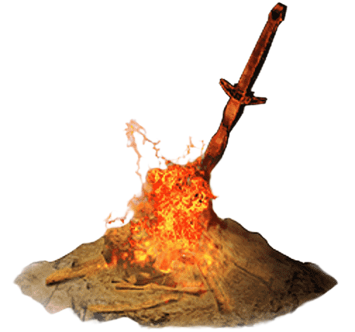

SEATH THE SCALELESS
“In his archives, all secrets rest. Find what he has hidden.”
By my name the dragon of Lordran is known. Type the archivist's name to kindle this cinder.
“The fire fades, and the Lords go without thrones.
The beacons shall be lit. The flame must be linked.”
To link the fire, one must walk the path of the Unkindled.
Prove your worth across the Four Cinders below.
SOULS COLLECTED: 0 / 4 CINDERS LINKED
0%“In his archives, all secrets rest. Find what he has hidden.”
By my name the dragon of Lordran is known. Type the archivist's name to kindle this cinder.
“A message sleeps among the bones. Turn each letter back by one: UFTU.”
Enter the decoded word.
“A web of paths curls around the flame. Name the first page most web servers seek.”
Enter the common default page filename (without extension).
“A binary speaks in hexadecimal. What is the ASCII character for 41?”
Enter the decoded character.
